British Library, MS Cotton Caligula A.ii ()
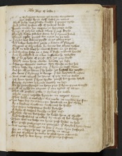
?n Tyberyus tyme . þe trewe Emperour Syr sesar hym self . sesed in rome whyłł pylat was provoste vnder þat prynce ryche 4And Iewes Iustice also of Iudeus londe ¶ Herode vnder his empere . as herytage wolde Kynge of galylee called . when þat crist deyde Thougħ Sesar sakeles were . he þat synne hated 8Thorow pylat pyned was . & put on þe rode ¶ A pyler was downn pygħt . on þe pleyn erþe His bodoy bowndon þerto . & beten with skorges whyppes of wherebole . by wente his whyte sythes 12Tyłł on rede blood he ranne as water in þe strete ¶ And sythen sette on a sete . with styffe mennes hondes And blyndfelled as a bee . buffettes he rawghte If þou be prophete of pryse . prophesye þey seyde 16whycħ man here abowte . bobette þe laste ¶ A stronge thornen crowne . they threste on his hed They kaste vp a gret cry . þat hym on crosse slewe And for ałł þe harm þat he hadde . ӡet hasted he nogħt 20On hem þat vylonye to venge . þat his veynes brusten ¶ But euer taryed þe tyme . if þey turne wolde Ӡaf hem space þat hym spylte . þougħ hit spedde lytyłł Fourty wynter I fynde . trewly no lesse 24Er he ponyshynge on hem put . þat hym pyne wrogħt ¶ Tyłł it tydde on a tyme . þat oon tytus of rome That ałł gaskon gatte . & gyanne þe noble whyle noye neӡedde hym to . in neroes tyme 28That hadde a maladye vn meke . in myddis his face ¶ His lippe lay on a loumpe . lyuered on his cheke As a kankur vnclene . enclyned he hadde His fader vaspasiane ferly bytydde 32A byke of waspes bredde in his nose ¶ Hyved vp in his hedde he hadde hem of thogħt And vaspasianne is called by cause of his waspes Ther was no leche on lyue . þese lordes to hele 36Nor grasse growynge on grounde . þat vayled here sores ¶ was neuer sekenes so sore . þat euer Syre suffered For on a lepyr he lay . ӡyt þer to in rome For out of galyce he come to glade hym a stounde 40Of þat kytħ he was kyng þougħ he care suffered 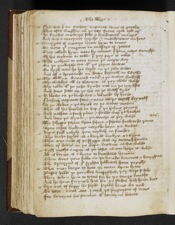
¶ Now was þer on nathan . naymes sone of greeke That ofte sougħte ouur þe see . from cyte tyłł oþur He knewe contreys fele . & kyndomes manye 44And was a maryner myche . & marchaunte in fere ¶ Senscyvs of surreye sente hym to rome To nero þat emperour in massage of Iewes Thay callede hym nero by name . þat hem noye wrougħt 48Of his trybute to telle . þat þey paye it nolde ¶ This nathan to nero nam þe nexte wey On þe grekesche see with þe grym wawes On hygħ sette he his seyle on þe salte water 52And with a dromande in deepe dryuetħ on swytħe ¶ The welkyn wanned anon . & þe watur skewetħ The clowdys ałł to clateren . as þey cleve wolde The rakke with þe rede wynde . roos in þe myddes 56And sone sette on þe see . on þe sowtħ syde ¶ It blewe on þe brode see . & bolnede vp harde Nathan naymes sone . a none on þe nortħ dryuetħ So þe wedur & þe wynd . on þe watur meten 60That ałł hit hurled on hep . þat þe helme ӡemed ¶ And nathan a ferd þanne . & fledde vnþur þe hacches And lette þe wynde & þe weþur worche as þey wolde The schyppe schare vpon schore . & schette frowarde rome 64Vpon costes vnkouþe caryede hem þe wawes ¶ Ropes fułł redyly þen reyked in sunder The brode sayles at a brayde brekyn a twynne That oone ende of þe shyppe was ay toward heuenn 68That oþur down in þe depe . drowne as hit wolde ¶ wytħ moche angur at þe laste as our lorde it wolde Ałł is borne at a byrre to burdews hauen Then were þere folke on þe banke barones & knyghtes 72The Cytezyns of þat syghte selkowth hem þougħt ¶ That euer barge or bote or man vpon lyue Passed hadde þo perelles vnperysched þey were so fele They token hem to tytus for he þe tonge kouthe 76And he hem freyned how fer . þe flodes had hem bore ¶ Syr out of surry he seyde . sayled haue we now To nero sent am I now þe seygnyour of rome Fro sencyus his seruant . with certeyne letters 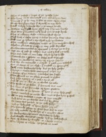
80That is Iustyse & Iuge of þe Iewes lawe ¶ The kyng in to counceyłł þen called hym sone Kennest þou quod he any crafte or cure vpon erþe To ese this grym sore þat syttetħ on my cheke 84I woll redyly rewarde the . & to rome sende ¶ Nathan nykkydde hym wytħ nay . þat he non kouthe But were þou knowen in þat lond þer as crist dyede Ther is a worþy wyfe . a womman fułł clene 88That hath a softe þyng & salue for euery sore owte ¶ Tełł me quod tytus & the shałł tyde þe bettur what medycyn {medycyn}moste is . þat þe mayden vsetħ whedur gummes or grasse or any gode drynkes 92Enchauntementes or charmes . I charge þe to say ¶ Not oon of þese quod nathan . but now I wołł þe telle Ther was a lede in our lawe . whyle he lyf hadde Proued for a prophete . in dedis wełł to prayse 96Borne in Bedleem vs by . of a berde schene ¶ And she vn marredde a mayde þat neuur man towched But as clene as þe clyffe . þat crystałł in spryngeth Witħ oute husbondes help . but þe holy gooste 100A kynge & aman childe conceyued at her ere ¶ A trowþe of þe trinite . I towched her hadde Thre persones in on place proued to gyder And yche a grayn is a god & on is ałł 104And ałł þre is but on as clerkes vs telle ¶ The fyrste is þe fader . þat formed was neuur His sone is þe secunde of hym growen The thridde is in heuen . with hem þat is þe holy goost 108Nother marked ne made . but mene fro hem passetħ ¶ Ałł ar þey endeles & euen of one mygħt And were er þe worlde was euur by gonne As soone was þe sonn as þe self fadyr 112And þe holy goost . with hem hadde þey euur ¶ The secunde persone þe sone sent was to erþe To take mannes kynde her of a mayden clene So vnknowen he come caytyfes to helpe 116And wrogħt wonderes I nowe . tyłł he detħ suffred ¶ wyn of watur he wrogħt . at a worde euene Ten lazars at a loke . he heled at ones 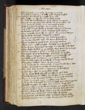
The payned in þe palsy . he putte in to hele 120And dede menne fro þe detħ . yche a day he raysed ¶ Croked & kankered . he curede hem alle The deef & þe dommbe . with his dere worde He dede of myracles mo . þen I haue in mynde 124Ther is no countere nor clerke . con hem reken ałł ¶ Fyve þowsand of folk . it is meruayle to here witħ to fysshes he fedde . & fyue barly loues And yche a man hadde y nowgħ . & forþer ouurleued 128Of bettes & of broke mete . baskettes fułł twelue ¶ Ther suwedde hym of on assent . seuenty & tweyne To do as he demede . disciples I chosen That he to cytees sente . his sawes to prechen 132Ay by two & by two . tyłł alle were disceuered ¶ Hym suwed of anoþur sent . semely twelue Pore men nogħ prowde . Apostles þey hyghten That of pore kynreden he chose . his cherche to fulfyłł 136That wyde walked in þe worlde . thus were he names ¶ Petur . Iames . & Ioħn . & Iakob þe fourthe The fyfte of þe fellyschippe . phylyppe he hygħte The sexte symon is called . & þe seuenthe aftur 140Bartholomew þat is boone . neuur breke wolde ¶ The eytethe man is mathew . þat criste myche loued Thomas & taddye . here is ten euen And Andrew þe elleuenthe . þat auentredde hym ofte 144Byfore prynces to preche . petres broder ¶ The laste was vn lele . & vntrewe of his dedys Iudas that Iesu to þe Iewes solde Aftur he hym self slowgħ . for sorow of þat dede 148His body hynge on alther . he braste in þe myddes ¶ Thenne crist harowed helle . & to heuen turned And for þat cursed mon . mathie þey chees And ӡet vn baptysed were . both {both} Barnabye & poule 152Nowgħt knowen of criste . but comen sone aftur ¶ The prynces & þe prelates . aӡeyn þe pasche tyme Ałł þey hadden hym in hate . for his holy werkes It was a dolorouse deede . when þey his deth keste 156By pylat pyned he was . þe prouoste of rome ¶ And þenne þis wordy wyfe . of whom I fyrst tolde Hath his vysage in a vayle . veronyca she hygħt 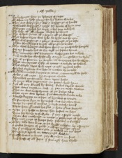
Loo lordynges here . þe lykenes of cryste 240Of whom my help I praye for his bittur woundes ¶ Then was wepynge & woo . & wryngynge of handes with lowde wepynge & noyse . for sorowe of hym oone The pope a valed his vayle . & his face towched 244The body aftur ałł a bowte . blessed he thryes ¶ The waspes wente ałł a weye & ałł þe woo aftur That byfore lazare was lyke . so lyӡte was he neuur Ther was pypynge & playe . partynge at þe laste 248Ӡolden thankynges to god . ałł þe grete lordes ¶ The cloth kawӡte was hem fro . & in þe cherche honged For þe somple hit to see . tyłł þe sopere tyme The vernacle aftur veronyca . vaspasyan hit called 252And made hit worshipfully a rayde . in golde & in syluur ¶ Ӡyt is þe face in þe vayle . as veronica hit browӡte That romaynes ryfly at rome . a relyke it holden This whyle Nero had noye . & non nyӡtes reste 256For his trybute was loste . as nathan hym tolde ¶ THe kyng comaunded knyӡtes to come . a counceyłł to holde Erles & ałł men . þe empere a bowte Assembled þe senatours . soon vpon haste 260To Iuge what Iugement . þe Iewes sholde haue ¶ And ałł þey demed by dome . dukes sholde wende That were cured in crist . þat þey on crosse slowen That on was vaspasyane . of þe dukes twoo 264That oþer was tytus . þat þe trauayle vnder toke ¶ A boolde knyӡte on a hors . of hye blode y comen No furthur kyn to hym self . but his owen sone Bothe kynges with crowne . & cryst moche loued 268That hem graunted his grace . & here grame stroyed ¶ Moste þey hadde in herte . her hestes to kepe Here forwarde to fulfylle . þat þey a forn made Then was rutlynge in rome . & rubbynge of helmes 272Schymerynge of sharpe stele . scheldes y dressed ¶ They toke here leue at þe londe . & lyfte vp a syngne A grete dragon of golde . & ałł þe genge aftur By þat þe shyppes were gon . & rowed in þe depe 276Trussed & tyred on toterynge wawes ¶ Fressħ watur & wyne . þey wynden in sone And stuffe of ałł store . þat strengħ hem sholde 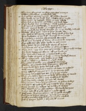
Ther were floygenes on flote . & farstes manye 280Cokkes & karekkes . y castelled alle ¶ And galeys of grete myӡte . with golden fanes The brede in þe brode see . a bowte fyve myle They tyӡen vp topsayle . when þe tyde askede 284They had þe pyre on þe bakke & þe londe lafte ¶ They sayled ouer þe salt see . witħ sawders manye And Ioyned to porte Iaffe . in Iudeus londe {S}Dynner cezares londe . þou mayste sorowe euur 288Now mykyłł woo wortħ wrogħt þe . in þy welthy townes ¶ Cytees vnþur syon . now is ӡour sorowe vp The deth of derworth criste . deere shałł ӡe hit bye Now betheem is þy bost . brougħ to an ende 292Ierusalem & Ieryco . for Iugged wrecches ¶ Shałł neuur kynge of ӡour kynne . with crowne be anoynted Nor Iewe for Iesussake . Ioke in ӡow more They sette vp on yche syde . sorwe with Inne 296And brente euur at þe bakke . & ałł bare laften ¶ Ther was noӡt but rorynge & rewthe . in ałł þe ryche townes For lyӡte lasschynge flame . ałł þe londe ouur The townes & towres . & holdes fułł ryche 300They braste þe ӡates of brasse . & many borowgħ wanne ¶ Ałł þe hethen folk . þey hewen to þe deth Both on benche & in bowre þat a byde wolde The Iewes to Ierusalem . þer Iosephus dwelledde 304Fledden as þe foule dotħ . þat fomenne assayletħ ¶ A cyte vnder syon sette was fułł rycħe with manye a turret & towre . þe town to þefende Mony a swykyłł swayne þen . to þe swerde ӡede 308For peny nor passed not oon . þat he paye myӡte ¶ That þey deden hem to þe detħ . with dentes of swerde witħ gynnes to ierusalem . þey chased fułł thykke And sette sadly a sege . þe cyte ałł abowte 312They pyӡten down her pauylones . of sylken webbys ¶ witħ ropes of ryche sylk . þey reysedde hem vp hye Grete tentes as a towne . of turcheyes clothes They chopped ouur þe cheueyteyn . charboukeles foure 316A gaye egle ałł of gold . stode on a gylde appełł ¶ with grete dragons & grymme . ałł in golde wrogħt And þer to lyounes tweyne . lyende þer vnder Paled & paued & peynted þe pauyloune a bowte 320Fułł of storyes styked . & steyned with armes 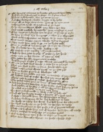
¶ Of dyuers coloures to knowe . & kouered vpon lofte And hundred stondynge in stage . in þat place a lone Towred witħ torettes . was þe tente þanne 324And aftur bretaged a bowte . bryӡte to by holde ¶ Eere ałł þe sege were sette . ӡytte of þe cyte come Messengeres Made . of Maystres of þe lawe To þe cheuenteyne chefe . þey chosen her way 328And made mekely by mouthe . here message at ones ¶ They seyþe þe sytezens han vs sent . to serche ӡour wylle To here þe cause of ӡour komynge . & what þat ӡe claymen Now wold vaspaciane no worde . to þe men shewen 332But sente sondes aӡeyn . twelfe sykur knyӡtes ¶ They made hem redy to go . & to þe lordes telle That þe cawse of his comynge . is criste to a venge Sey þat I bydde hem by redy . bysshop & ałł 336To morwe or þe mydday . ałł moder naked ¶ And vp here ӡates to ӡelde . with ӡerdes in her honde Eche mon in his sherte . with owte oþur clotħ The Iewes for Iesu Iugemente to take 340And brynge Cayfas þat criste . thorow counnceyłł by trayde ¶ Or I to þe wałł shałł wende . & caste hit to þe erþe That þer shałł stykke ne stone . stonde whenn I go These messengeres sente fortħ . to þe cyte ӡode 344Ther þe lordes of þe lond . dwelleden ałł ¶ As sone as þey tolden þis tale . in trewthe as þey sholde Of cayface and of criste . {ho}& how þey come sholde whenne þese knyӡtes of cristes . spekynge by ganne 348The Iewes token hem as sone . with oute talkynge more ¶ And here hondes bownden at her bakke . fułł bittyrly þanne And schoven of her fax . & ałł her fayre berdes As naked as a nedele . in to þe neþur hove 352Her face enbawmedde in blode . & ałł þe body aftur ¶ And aftur þis knytte to eche a knyӡte . with a gret corde A chese & chargede hem . her cheuenteyn to bere And sey vnbuxum we be . his byddynge to kepe 356We drede no þyng his dome . his deth haue we ordeyned ¶ he shałł vs fynde in þe felde . no ferther to seche To morwe pryme or hit passe . & so ӡour prynce telletħ These men buskede hem out of borowe . bounnden ałł twelfe 360Aӡeyn message to make fro þe mayster Iewes ¶ was vaspasyane neuur so wo . as when þe knyӡtes come That were shamed & shent . on suche a fowle wyse  The knyӡtes komen to þe kynge . & vpon her knees fellen 364And ałł þey tolden þe tale . as hit by falle hadde ¶ Of þy manasse & þy myӡte . þey sette but a lytełł Thus ar we turned in tyre . in token of þe soþe And bownden hem by bolde speche . to bateyle þey wyllen 368To morwe pryme er hit passe . þey putte hit no forther ¶ And seyn it shałł lyӡte on þy selfe . þe same þat þou hem demes Thus þey certyfye þe & seyn . & sente þe þis chese wood wepynge wrotħ . vaspasyane was þenne 372Leyde wacche to þe wałł . & warned in haste ¶ That ałł maner of menne . on þe morwe sholde By soone aftur þe sonne . gedered in þe felde He sette vp a standarde . in an Angry wyse 376Bylte as a berfray . euen fułł of wepyn ¶ That when auӡte fayled in þe felde . þat to fyӡte longede At þe berfray to be . botenynge to haue A dragon is dressed . & drawen vp on lofte 380wyde gapynge of golde . þe lordes vn to shewe ¶ wytħ arowes & armour in mowthe . & also he hadde A fawcoune vndur his foote . with fowre kene federes Therof þe poyntes y pyӡte . in partyes fowre 384And of þis wantone worme . is wondur to here ¶ In rebukynge of þe folke . þe fawkoun he helde That þey witħ werre wonne ałł þe worlde ryche On a balle of brente golde . þe beste was assysed 388His tayle trayled doun . þat turne shulde he neuur ¶ whenne he was lyfted on lofte . þe lordes a forn Meste þey looke to þe lane . tyłł it lawӡte were Ther by myӡte þe cyte see . no pece shulde ryse 392Nor entre of trewe loue . tyłł þe town be ӡelden ¶ Or ryde ouur þe romayns . for þey haue rede taken There bykere to a byde . or þe borwӡ wynne Bretaged bygly a bowte . þe berfray is þanne 396with a dredefułł towre . þat ouur þe town hangedde ¶ The beeste by hys bryghtnes . men myӡte kenne Fowre myle þer fro . forsothe at þe leste They honged belles a bowte . þat bysyly roungon 400At yche a blaste of þe wynde . þat þe wynges towched ¶ On yche a pomełł is pyӡte . penselles hye Of sylke & of syluur semely arayede
The knyӡtes komen to þe kynge . & vpon her knees fellen 364And ałł þey tolden þe tale . as hit by falle hadde ¶ Of þy manasse & þy myӡte . þey sette but a lytełł Thus ar we turned in tyre . in token of þe soþe And bownden hem by bolde speche . to bateyle þey wyllen 368To morwe pryme er hit passe . þey putte hit no forther ¶ And seyn it shałł lyӡte on þy selfe . þe same þat þou hem demes Thus þey certyfye þe & seyn . & sente þe þis chese wood wepynge wrotħ . vaspasyane was þenne 372Leyde wacche to þe wałł . & warned in haste ¶ That ałł maner of menne . on þe morwe sholde By soone aftur þe sonne . gedered in þe felde He sette vp a standarde . in an Angry wyse 376Bylte as a berfray . euen fułł of wepyn ¶ That when auӡte fayled in þe felde . þat to fyӡte longede At þe berfray to be . botenynge to haue A dragon is dressed . & drawen vp on lofte 380wyde gapynge of golde . þe lordes vn to shewe ¶ wytħ arowes & armour in mowthe . & also he hadde A fawcoune vndur his foote . with fowre kene federes Therof þe poyntes y pyӡte . in partyes fowre 384And of þis wantone worme . is wondur to here ¶ In rebukynge of þe folke . þe fawkoun he helde That þey witħ werre wonne ałł þe worlde ryche On a balle of brente golde . þe beste was assysed 388His tayle trayled doun . þat turne shulde he neuur ¶ whenne he was lyfted on lofte . þe lordes a forn Meste þey looke to þe lane . tyłł it lawӡte were Ther by myӡte þe cyte see . no pece shulde ryse 392Nor entre of trewe loue . tyłł þe town be ӡelden ¶ Or ryde ouur þe romayns . for þey haue rede taken There bykere to a byde . or þe borwӡ wynne Bretaged bygly a bowte . þe berfray is þanne 396with a dredefułł towre . þat ouur þe town hangedde ¶ The beeste by hys bryghtnes . men myӡte kenne Fowre myle þer fro . forsothe at þe leste They honged belles a bowte . þat bysyly roungon 400At yche a blaste of þe wynde . þat þe wynges towched ¶ On yche a pomełł is pyӡte . penselles hye Of sylke & of syluur semely arayede 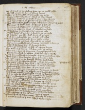
It glyttered as þe glede of fyer . in þe goold ryche 404Ouur ałł þe cyte to see . as sonne bemes ¶ Afore þe fowre ӡates þoo . formede þey to lye Syxty þowsand by somme . whyle þe sege lasted And sette wacche to þe wałł þat none a wey wente 408And sixe þowsand to sherche þe cyte ałł a bowte ¶ was ther nawӡte whyłł þe sege lasted . but neynge of stedes Sterynge of steełł wede . stuffynge of helmes Armynge of Olyfauntes . & oþur stronge bestes 412Aӡeyn þe cristen to come . with castelles on bakke ¶ Vaspasiane y armed & his meyne alle Dygħt forþe with þe day . & drowen to þe vale Of Iosaphat þer Iesus . shałł deme ałł þynges 416And hem enbatelede þer . to byde þese othur ¶ Tytus toke þe vawarde . for to telle þe soþe wyth sixtene þowsande assygned for þe nones And in þe myddylwarde as many . markedde to beene 420Ther vaspasiane was . with princes & dukes ¶ And in þe rerewarde as fełł . with a fayre knyӡte Syr sabyne of surry . a sykur man of armes Ther was a prince of prouynce . þat moche perpułł ladde 424Fourty hundred on a hepe . witħ helmes to shewe ¶ And ten þowsand in þe tayle . at þe tentes were lafte Here hors & here harnes . from harmes to loke By þat trumpes in þe borwgħ . blewen fułł lowde 428And baners benden hem fortħ . & blysse vs þe tyde Passus iijus
¶ The Iewes gadered were sone . & of þe cyte comen
An hundrede þowsand on hors . in armour a tyredde
with oute folke vpon fote . at þe foure ӡates
432That precedde out to þe playne . with pauyce on honde
¶ And fyve and twenty Olyfauntes . fusabułł beestes
with brothe castellis on bakke . out of þe borowgħ comen
And on eche an olyfaunte armed men mony
436Nyӡe an hundrede on hyӡe . & hurdes with Inne
¶ There dromedaryes drowӡe downe . deuylycħ manye
And hundrede & ałł hyled . in harnes of mayle
And eche with a bygge towre . & bolde men þer Inne
440Twenty telled by tale . in eche a {twore}towre euen
¶ Chamelles closed in steele . komen out þanne
Faste toward þe felde . & a fułł grett numbur
Buscked hem to batayle . & vpon her bakkes ledden
444Eche a torette of tre . with ten men of armes
¶ Chares fułł of chosyn men . charged with wepyn
A wondur numbur þer was . who so wyte myӡte
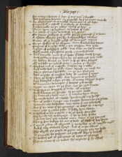For mony a dowӡty þat daye . þat was neuur a dradde
448was fownþen feynte in þe felde . by þat þe fyӡte endede
¶ An Olyfaunte enarmedde . kome out at þe laste
Couered with a castełł . þat craftyly is wrowӡte
A tabernacle in þe towre . tyred is hyӡe
452Pyӡte vpon apauyloun . on postes of syluur
¶ An owche of syluur walewede þer Inne
On foure goiones of golde . fro þe grounde þat it beere
A chosen chayer þer by . & chaundelers twelue
456Beten ałł of brygħt golde . with brennynge tapers
¶ On þe chekys of þe chayere . were charbokeles foure
Couered with a ryche clotħ . & þer Cayface was sette
A plate of polysshed golde . was sette on his breeste
460wytħ many a pressious perle . & pured stones
¶ And lernede men of þe lawe . þat lowde couth synge
with psalters seten hym by . þe psalmes þey redde
Of dowӡty dauyd þe duke . & of þe dere storyes
464Of Iosephe þe nobułł Iewe . & Iudas þe kynge
¶ Cayface out of a cheste . kawӡte vp a rolle
And redde how þe folke ranne . thorow þe reede see
when pharao & his folke . in þe see drowned
468And myche of moyses lawe . he meved þat tyme
¶ when þe hethen folke . was komen to þe feelde
And batayled a fore þe oste . with many a bygge wepoun
with baneres & trumpes . & beestes yarmedde
472Myӡte no man se þe sonne . nor þe cyte knowe
¶ Vaspasyane deuysed de vale . ałł a bowte
with baners ouur spradde . to þe cyte walle
To barouns & bolde men . þat a bowte hym were
476He seyde lordes ałł a lowde . herkeneth my speche
¶ Her is nother kynge nor knyӡte . komen to þis place
Baroun nor bachelere . nor man þat me folowetħ
But þat þe cause of his comynge . is criste to a venge
480Vpon þese feythles folke . þat falsly hym slowen
¶ Beholdetħ to his passyon . & to þe harde woundes
The byndynge þe betynge . þat he on body hadde
And lette neuur þese laweles men . lawӡe at his harmes
484That so dere bowӡte vs out of bale . with blode of his herte
¶ I voyde awey ałł cleymes . & quarelles of ałł quykke men
And of euery crowned kynge . but of criste allone
The whycħe þis peple to pyne . no pyte þey ne hadde
488As preueth his passyon . þe gospełł who so redytħ
¶ It nedeth not at þis tyme . of nero to mynge
Nor to trete of no trwes . for trybute þat he asketħ
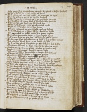The quarełł of nero clene I avoyde . by qwede it wher he wyłł
492Of his rebelles to rome . reson to haue
¶ But mournynge in oure mode . vs mynges to deye
That by reson to rome . þe ryalte longetħ
Bothe þe myӡte & þe mayne . & þe maystrye on erthe
496And lordshyp of euery lond . þat lyetħ vndur heuene
¶ Hors ny harnes but þey hit harde bye
Plate ne besaunte . nor pendauntes ende
whyle we may laste . or þe lyfe haue
500For þey ar faynte in þe fyӡthe . & fals of byleue
¶ And wołł wene at a lefte . ałł þe worlde to kylle
Nor grounded in godde . ne in his grace tristen
But ałł in sterenes & stoure . & in strengthe alone
504And we ar dyӡth in þis day . ałł myӡty god to serue
¶ To brynge þese deuelles out of lyfe . & his detħ to venge
His meyne leued hym . & on lowde seyden
He þat þis day fleetħ ony foote . þe fende haue his sowle
508Clariouns blewen on hyӡe . & horses be gonne to naye
¶ Stedes stamped in þe place . vndur þe stele a ray
Styffe in þe styroppes . stryden vp on lofte
Knyӡtes & crossen hem selfe . & cacchen her helmes
512Claryones cryden faste . & curyous pypes
¶ Tymbres . Tabers . & trumpers fułł trye
They ӡafe a shryke & a showte . for to shrynke þe Iewes
And wymmen wepynn on hyӡe . whenne watur he nyӡetħ
516They kawӡte launces a none . & leppenn to gydur
¶ As fyer out of flynte stone . thus faredde hem by twene
Duste drofe vp on lofte . dryuynge a bowte
As þonnther in thykke rayne . persheth þe skyes
520The berne barnes þer a bowte . brosten here speres
¶ Knyӡtes kneled a downe . to þe colde erthe
And fowӡten faste in þe feeld . & euur þe fals vnþur
Tytus turnede hym a none . & tolleth of þe beste
524Fortħ Iustetħ þe Ioly knyӡte . with Ioynynge of werre
¶ And aftur with a bryӡte swerde . bethetħ on faste
That þe brayn & þe blode . vp on þe swerde lafte
And aftur on þat oþur syde . with a sore wepyn
528Beet vpon brown steele . whyle þe bladde lastede
¶ On hyӡe he lefte his swerde . & as a bore he loketħ
He hewedde on hertyly . cacche who so wolde
Ałł shyned þe feelde . as bemes of þe sounne
532Of þe golden gere . & of þe goode stones
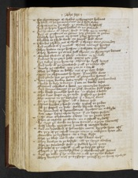¶ For shyuerynge of sheldes . & shynynge helmes
It ferde as þe fyrmamente . on a fyer were
Vaspasiane in þe vale . þe vowarde byholdetħ
536How þe heþen hopped hedles . to þe grounde
¶ And he come with a fayr ferde . þe false vn to mete
Ryӡt as gryffones on grene . þey gurdenn to gedur
Spedyly her speres . on peces ganne sprynge
540Shyldes as schyde woode . on soundur dede cleue
¶ Swerdes schoken out of shede . þat sharpe were grounden
And mallede with þat metałł . thorow mennys hertys
They hewen on þe hethen . & fowӡten to gedur
544They hewen þe armour fułł shene . on shynynge barnes
¶ Bankes flowen of floode . a bowte in þe vale
And out of þe gaye golde . goters þer ӡode
Syr Sabyr sette hym vp . whenne he sygħ tyme
548And roode with þe rerewarde . & ałł þe rowte aftur
¶ Kenely þe castelles . þey gan to a sayle
That þe bestes on bakke . out of þe cyte ledde
Vpon þe olyfauntes he hytte . þat orryble were
552And gerde out þe guttes . with grounden speres
¶ Here ropes breken down rygħt . þat redyly an hundred
Shulde be bysy to burye . þat oon on banke lafte
Clatered castelles a down . þe cameyles brosten
556And dromedaryes to þe detħ . drowen fułł faste
¶ The bloode fomedde hem fro . in flodes a bowte
That knee deepe in þe vale . dasshede þe stedes
The mayne in þe bastyles . þat a bouen were
560For þe dust & þe dynne . ałł a downe ӡode
¶ Thenne hurdes & harde erthe . Iusted to gedur
Ałł for stopped in stele . starke blynde waxen
An houndred of dromedaries . dyeden in a whyle
564was none lafte vpon lyue . þat on lofte stodenn
¶ Safe oone Olyfaunte a lone . at þe grete ӡate
Ther as cayface þe clerke . in a castełł rydetħ
He syӡe þe werke on hem wende & aӡeyn turnetħ
568witħ twelfe maystres I made of moyses lawe
¶ And an hundred of helmedde men . hyӡede hem aftur
Er þey of þe castełł myӡte come . & cawӡten hem alle
Bounden þe bysshoppe . on a sory wyse
572That þe blode out braste . eche a bone vndur
¶ They browӡte to þe bastyle . ałł þe sorye clerkes
wher þe standarde stode . & stokked hem þere
The beste of þe castełł . & ałł þe bryӡte gere
576Chayer & þe candelstykkes . & charbunkułł stones
¶ And þe rolle þat he redde on . & ałł þe ryche bokes
They browӡte with þe bysshoppe . þowgħ hym heuy thowӡte
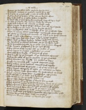Anone þe faythles folke . faylede her hertes
580Turnede toward þe towne & tytus hem aftur
¶ And felde of þe fals folk . & þey þe felde fledde
And hondred of hethen . with his owene hande alone
The false folk in þe felde fellen so thykke
584As hayle {fro}þat cometh fro heuenwarde . hoppeth vp & vndur
¶ So was þe banke ałł a bowte . blody by ronne
witħ dede bodyes ałł a boute . þe brode vale
Ther myӡte no stede steppe downe . but ałł vpon steele
588Or on bestes or on men . or on bryӡte sheldes
¶ The multytude was so myche . þat on þe grownde laste
Ther so many were marredde . merveyle were elles
Ӡet were þe romaynes sounde . as when þey fyrst comen
592wełł a rayde eche a manne . nowӡt oo rynge brosten
¶ So criste gan his men kepe . tyłł complens tyme
Ther was no bone broken . better were þey neuur
An hondred þowsand helmes . on þe hethen syde
596were founden faynte in þe felde . not oo man skaped
¶ Safe seuen þowsand þat to þe cyte fledde
They wanne with moche woo . þe walles with Inne
Menne lepen to a none . & lokkeden þe ӡates
600Barredde hem bygly . with barres of Iren
¶ And brayde vp þe bregges . with þe bownden cheynes
And porte colis with pyne . pyӡten to þe grownde
They wenten vp wyӡtly . þe walles to kepe
604Fressh vn wonded folk . a grett defence made
¶ They token in to towres . tonnes fułł thykke
with grete stones of greete . & of gray marbułł
They kepte sharpely with caste . þe corners on lofte
608They shette oute quarelles . by quarteres at ones
¶ That oþur folk vpon fote . fresschelye assayledde
Tyłł eche dale with þe dewe . was dankedde a boute
Tho withdrewe fro þe dyche dukes & oþur
612For þe caste was so sharpe . þat kame fro þe wałł
¶ They comen with þe kynge forth aӡeyn . clene as þe ӡeden
They wanted neuer a man . nor no woundes hadde
Thanne princes to here pauylones . preced fułł thykke
616And vn arayde hem sone & ałł þe nyӡte restedde
¶ with wacche a bowte þe wałł . manye a man to sorowe
They wyłł noӡt þese hethen houndes . thus harmeles passe
As sone as þe rede daye . roose on þe skye
620Claryones blewen a brode :þe lordes gon a ryse
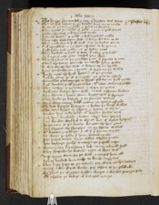¶ The kynge commaunded a cry . þat knowen was sone
† Passus iiijus†
That þe dede bodyes on þe banke . bare vn to make
To spoyle þe sleyne folke . & spare no lengur
624They geette gurdeles of golde . & many gode stones
¶ Bedes & broches . & besauntes ryche
Helmes hewen of golde . & haburgones noble
They caste dede vpon dede . þat heuy hit was to se
628They made weyes fułł wyde . & to þe walles wente
¶ And assemblede to þe Cyte a sawte . to by gynne
Fresħ folke fułł þykke . at þe fowre ӡates
They browӡte towres of tree . þat taken þey hadde
632And a ӡens eche ӡate . reysed þem hyӡe
¶ They by ganne at þe gretteste ӡate . a garette to rere
Getten vp fro þe grounde . on twelfe sykur postes
It was wonderlye wyde . & wroӡte vp on hyethe
636Fyue hondredde on a fronte . to fyӡte on þe walles
¶ Hardy men vp hyed . hewen at þe greces
And by gonne þo with strengthe . þe cyte to assayle
Quarelles flawmynge in fyre . flowe in fułł þykke
640And Arowes fułł smertelye . with atter envenemedde
¶ They tachen at þe towres . & chasen þe Iewes
wytħ care kawӡte here detħ . many a sharpe baroune
They brente & beten doun . byggynges so stronge
644They brake þe bastyle . & þe stronge towres
¶ By þat were mony bolde menne þe cyte to assayle
The hole batayle bownne . a bowte þe brode walles
That were bygge at a byrre . & byttur to wynne
648wonder hyӡe to by holde . with holowe dyches vnþur
¶ And hyӡe bankedde a bowte . vpon boþe halues
And wonder wykked to wynne . but if wyles helpen
Bowemen at þe banke . benden vp her gere
652And shoten vp sharplye . at þe shene walles
¶ with Arowes & arblaste . & ałł þat þat harme myӡte
To affraye þe folke . þat hem defens made
The Iewes wroӡte on þe walles whyles I nowe
656Hote boylynge pyche . a monge þe pepułł caste
¶ Brennynge brymstone & lede . many a barełł fułł
They shoofedde hit downn . ryӡte as shyre watur
Vaspasiane wente fro þe wałł . & cursed hem ałł
660And oþur buskede hem redy . to bende engynes
¶ They kaste faste to þe townn . þey claterede her towres
Many a dere dayes werke . þey casten to þe grownnde
By þenne þe wryӡtes hadden wroӡte a wonder stronge pale
664Ałł a bowte þe bowrӡe . with basteyles monye
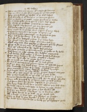¶ That no manne out wente . with oute fressħ harmes
Nor no manne vnder sonne . myӡte fro þe cite passe
Aftyr þey fylledde þe dyches . with þe dede bodyes
668And crammede it with kareyne . þe corneres vnder
¶ That þe stynke & þe steewe . myӡte stryke ouur þe walles
The cursedde folke vn to greue . þat hem kepe sholde
The course of condites . þat come to þe towne
672They stoppede euery streme . þer any sprynge ӡode
¶ witħ stakes & stones . & stynkynge bestes
They myӡte to no watur come . þat were with Inne closed
Vaspasiane turned to his tente . with tytus & oþur
676And commaunnded a counceyłł . on Cayphace to sytte
¶ what detħ by her dome . þat he dye shulde
And also with þe lettered menne . þat þe lawes ledde
The domes menne her dethes . demeden fułł sone
680whyłł euery man was qwykke . þe skynnes of to be flayne
¶ Fyrst to be on þe erþe . with horses I drawen
And aftur I honged on hy . vpon hyӡe galowes
The feete towarde þe fyrmamente . þe folke to by holde
684with hony on eche a parte . her bodyes anoynted
¶ And currys witħ cattys . þat clawes hadde fułł sharpe
Fowre were kawӡte & knytte . Cayphas a bowte
And two Apes also . to angur hym þe more
688For to rende þe rawe flesh . ałł on rede peces
¶ So was he pyned from pryme tyme . with pershedde syþes
Tyłł þe sonne was down sette . in þe someres tyde
The lernedde menne of þe lawe . a lytełł by neþe
692were turned on a tre . topsayle waltur
¶ And knytte were to euery clerke . Curre dogges tweyne
That ałł þe cyte myӡte se . þe sorow þat þey hadde
The Iewes tombledde ouur þe wałł . for sorwe in þat tyme
696Seuene hondredde slewe hem self . for wo of her Clerkes
¶ Some toke hem self by þe heere . & fro þe hede pulled
And some down for sorowe . dassched to þe ground
The kyng badde drawe hem downn . whenne þey dede were
700He badde a fyre to make faste . to brenne in þese clerkes
¶ They caste Cayphas þer Inne . & his clerkes ałł
And þer þey brent euery bone . in to browne askes
And aftur wente to þe wałł . on þe wynd syde
704Ałł a brode in to þe cyte . þey blewen þe powder
¶ Ther is dust to ӡour drynke . A duke þo seyde
He badde hem drynke hit in broth . for þe bysshoppis sowle
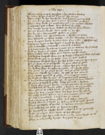Thus ended cursed Cayphas . & his clerkes twelue
708In token of her tresonne . þat þey to Iesuwroӡte
when criste by her counseyle . was kawӡte & put to detħ
¶ By þen was þe day done . & þenne dymmedde þe skyes
Then wax dirke þe mownteynes . & þe mores abowte
712And fowles fełł to foote . here federes to reste
The wacche wente to þe walles . þe waytes ganne blowe
¶ Bryӡte fyres & brode . were made in þe oste
The kynge & his counsełł . speken to gedere
716They chosen out cheuentaynes . & chydde no more
But charged þe cheef wacche . & to her chambur wente
¶ Bothe kynges & princes . to taken hem somme reste
Passus vus†
Vaspasiane lyӡte in his logge . & lytyłł he slepeth
720But walowedde & turned . & meued a bowte
And euermore by twene tymes . on þe townne he þenketħ
¶ Tyłł þe daye & þe nyӡte . departed in twynne
Then larkes vpon lofte . sone leften vp her voys
724And lordes dressede hem out of bedde . & claryones blew vp lowde
Bothe blewe þey in þe felde . & on þe cyte walles
¶ Vaspasiane dressede hym fro his bedde & arayde hym fayre
Fro þe foote to þe forhedde . in fyne cloth of golde
728And aftur putteth þat prince . a boue his gay a ray
An haburioune browdered þykke . with a brest plate
¶ The grate on þe graye steele . was of golde ryche
Ther on castede he a cote . of colour of his armes
732And a grete gyrdełł of golde . with oute gere more
He leyde on his lendes . with lachettes fułł monye
¶ A bryӡte burnysched swerde . he gyrdeth hym a bowte
Of pure polysched golde . bothe pomełł & hyltes
736A brode shynynge shelde . on his schuldur he hanged
And bokeled with bryӡte golde . a bouen at þe nekke
¶ The gloves of graye steele . with golde were hemmed
when he was a rayde thus . his hors sone he asked
740The golde hewen helme . hym was browӡte þenne aftur
with visour & ventayle . a vysed for þe nones
¶ And a crowne of clene golde . was closed a bouen
Rayled rounnde a boute þe helme . fułł of ryche stones
744Pyӡte prowdely with perlis . þe helme rounde a bowte
And witħ safyres sette . þe syþes to & fro
¶ He strydetħ on a styffe steede . & styred on þe grounde
Lyӡte as a lyon were losed . of his cheyne
748Hys menne syӡe hym eche oone . & euery manne sayde to oþur
This is a komely kynge . knyӡtes to lede
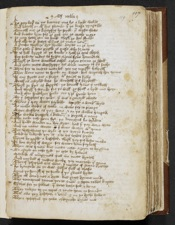¶ He pryked to þe barres . ere he a byde wolde
And betetħ on with his swerde . þat þe brasse ryngedde
752Cometħ out ӡe kaytyfes he seyde . þat cryste slowe
And knowe hym for ӡour god . ore ӡe cacche more
¶ Ӡe may fette ӡou no foode . thogħ ӡe dye shulde
And also to ӡour watyr . wynne ӡe maye neuur
756A droope thogħ ӡe dye shulde . dayes in ӡour lyue
The pale þat here pygħt is passe who so may
¶ It is fułł bygge at þe banke . & hath ӡour cyte closed
For fowrty menne to fyӡte . aӡens fyve houndred
760Thogħ ӡe were deuelles echon . aӡeyn turne ӡe shułł
And ӡette more worshyppe hit were . mercy to be seche
¶ Then for to marre meteles . þer no mygħt helpytħ
Ther were none to speke on worde . but wayted her tyme
764If any styrte out a straye . with stones to kylle
wrotħ as a wylde bore . he wendetħ his brydełł
¶ Thogħ ӡe dye as dogges . þe deuełł haue þat rekketħ
And thogħ I wende fro þe wałł . ӡe shałł a byde me here
768And ofte spedelyer speke . ere I ӡour speche here
By þat Iosephus þe Iewe . þat was a gentyłł clerke
¶ whenne þat þey water fayledde . wrogħt a wondur wyle
He made wedes of wolle . in wete for to plonge
772water wasshen as þey were . & on þe walles hanged
The wedes dropped a downn . & dryed a none
¶ The reke rose hem fro . þe Romayns be hylden
And hadde wonder in her wytte . how þat þey were wete
776And no manne wente . þat þer were watyr with Inne
But vaspasiane þe wyle . of þe werre knewe
¶ Lowde he lawӡede þer at . & to his lordes seyde
Syres be nogħt a bassched . thogħ þey þis boste make
780It ben wyles of werre . for water hem fayletħ
Then was þer non but newe note . aӡeyn to bygynne
¶ To asseyle on eche syde . þe cyte by halues
Markede with mangynels . fułł vn mete dyntes
784And mykełł of masons werke . þey marrede þat tyme
Ther of Iosephus was ware . þat myche of werre kowthe
¶ He hengede on þe wałł . sakkes fułł of chaffe
Aӡens þe strengħ of þe stroke . þer þe gonnes hytte
788That ałł dered not a dyce . but greet dynne made
The romaynes ranne þer to anon . & vpon roddes knytte
¶ Sythes for þe sakkes . þat were bothe fełł & kene
They rawӡte to þe ropes . & rente hem in sounder
792That alle þey dassched a doun . & in þe dyche fellen
Then Iosephus þe Iewe & ordeynede wyles moo
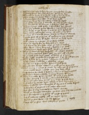¶ witħ brennynge oyle he hem brente . & myche bale wrogħte
And vaspasiane wounded was þer . wonderly sore
796Thorowgħ þe harde of þe heele . witħ an hande darte
That þe poynte thorow bote . & þe bone naylede
¶ And þerto fetered þe fote . to þe hors syde
Soone þer kome hym to . many a sadde hondrede
800That wolde a venge þat wounnde . or ellis sorowe a byde
They brayden to þe baryers . & fowӡten wełł ofte
¶ with foynynge rigħt felly . & spendeden her speres
Ther þey Iolledde Iewes thorow . & engynes by þanne
804were bente at þe banke . & in to þe cyte drewenn
Ther were meruayles mony . as men may here
¶ A manne with a rounde stone . was to þe brayne cleued
A grete pece of þe panne . with þe brayne out started
808A wommanne grette with chylde . was on þe bely hytte
witħ a stone on a stayre . as þe story telletħ
¶ That þe chylde fro þe body . fell out clene
And borne vp as a balle . ouer þe townn walles
812Ther were menne brayned . & brosed to þe detħ
And wymmen wyde open fełł . vnder þe stones
¶ That fylettes fro her forhedes . ałł a bowte flowen
And mony torettes down fełł . þe cyte ałł a bowte
816So þe cyte hadde been sesed . with sawte at þat tyme
Hadde nogħt þe folke bene so stronge . þat þe deuełł serued
¶ That kyllede of þe cristen . & kepten þe walles
witħ arowes & arblaste . & asschelers manye
820Speres out of spryngalles . sponnen fułł harde
They drewen dartes a downn . & made grete woundes
¶ That many a manne of rome . by restynge of þe sonne
were myche leuer a leche . þan any body ellys
824Vaspasiane styntede þat stowre . & kome to his knyӡtes
That were beten & bledde . vnþer þe bryӡte Irenne
¶ They turnedde to her tentes . with tene þat þey hadde
wonder werye of þat werke . & wounded fułł sore
828Here helmes & here armour . þey kaste of fułł sone
And leches by torche lyӡte . lokede to here woundes
¶ They wasshedde here woundes with wyne & with wolle stoppede
witħ oyle & with orysones . & with other charmes
832And after þat euery manne . to þe soper wente
Thogħ þe woundes were sore . þer was none þat of woo menede
¶ But daunsynge & no sorow . with noyse of pypes
And with nakeres nysely . ałł þe nyӡte tyme
836whenne þe nyght was doone . & þe day spronge
Soone aftur þe sonne . were gedered þe grete
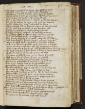¶ They come fortħ with þe kyng . counnseyle to holde
Ałł þe knyӡtes keene . þat for criste werredde
840vaspasiane wayteth a bowte . his mayne to byholde
That fresschere were þanne to fyӡte . thenne euur þey were
¶ He prayde prynces fyrste . & ałł þe pepułł aftur
That euery manne of þat werre . shulde his wytte shewe
844For ere þis towne be tane . & ałł þese hye towres
Myche tormente & angur . vs falletħ to haue
¶ They turned ałłe to Tytus . & hym þe tale graunted
Of þe Cyte & of þe Seege . to sey for hem alle
848Thenne turned tytus . & talkynge bygynnetħ
Thus to byker with þis folk . vs falletħ þe werre
¶ For þey are fełł of defens . fers menne & nobułł
And þis towred town . is trowbelous to wynne
852The worste wrecche of þe town . may on þe wałł lye
And kaste down a stone . & stonye manye knyӡtes
¶ whyle we shałł hoofe & byholde . & no stroke smyte
And euur þe hurte & þe losse . shałł lyӡte on our selfe
856Nowe þey may no ferther goo . her mete for to wynne
wolde we stynte of our stryfe . tyłł þey her store haue spended
¶ we shałł witħ hongur hem honte . & hurle oute of towne
witħ oute wemme or wounde . or any wo ellys
860For there as lakketħ mete . þer ys faynte strengthe
And þer as hongur is hote . hertes are febułł
¶ Alle assented to his sawe . þat to þe sege longede
The kynge was plesed with þe prince . & þe pepułł alle
864The kynge kallede to hym . his connstables þenne
Marchalles & bedelles . & menne þat he trystedde
¶ He chargede hem styfely . for chaunce þat may falle
with wacche of waker menne . þe walles to kepe
868For we wyłł honte at þe herte . the hethes a bowte
with racches amonge hem . in þe rowe bankes
¶ And þenne {to}ryde to þe ryueres . & reyse vp fowles
To se fawkons fle . & sle of þe beste
872And eche man to his solace . þat hym beste plesetħ
Thenne princes out of pauylones precedde fułł thykke
¶ witħ sterne menne & stronge . þat to þe town waytedde
This lyfe ledde þey longe . our lorde he vs blesse
Passus vjus
876¶ In Rome nero was . & mykełł woo wrogħt nota
To dethe pyned he þe pope . & myche pepułł kylledde
Petur prince of posteles . & seynt poule also
Seneca & þe senatowres . & þe cyte fyrede
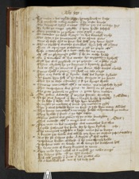 880¶ Hys moder & his mylde wyfe . he mordered to dethe
And combrede mony cristen . þat on criste leuede
The Romayns rysen a none . whenne þey þis rewthe syӡe
To kylle þe emperour qwykke . þat hem hadde desesed
884¶ They preced to þe palyce . pore peple & other
To murder þe bolde kynge . in his borowgħ ryche
The cyte & þe senatoures . of on assent were
None oþer dede was to done . his detħ þey haue dyӡte
888¶ Thenne fledde þat wrecche frendles . hym self ałł a lone
Oute at apryuye posterne . & ałł þe peple aftur
Safe a tronchon of a tree . toke he no more
Of ałł þe glytrynge golde . þat he on erthe hadde
892¶ On þat tronchon with his teethe . he toggethe & bythetħ
Tyłł hit was prykked at þe poynte . as a prikke ende
Thenne a bydeth he þe barones . & bytterly speketħ
And to alle þe comens þat þer were . these wordes a lowde
896¶ Turne traytours a geyne . þer shałł no tale a ryse
That any karle of ӡour kynde . hatħ his kynge kylledde
He smote hym self with þe stake . streyӡte to þe herte
That hit to clefe a sounder . & so þe kynge dyede
900¶ Seuene monethes aftur & no more . þis myschefe by fełł
That vaspasiane was gone . to werre on þe Iewes
The grete gedered to gydur . & gette hem another
Oon gabaa a werche . þat myche sorowe wrowӡte nota† GABAA †
904¶ To sir otus lucyus . þat hym longe hadde hatedde
At þe laste þat lorde . out of lyfe hym browgħte
In myddes þe markette of rome . þey metten to gyder
Ther sir otus felledde hym in faye . & ӡafe hym many woundes
908¶ That foure monethes & no more . hadde mayntened þe crowne
Thus dyedde þat prince . & þe lyfe lafte
whenne gabaa was goon & to þe erthe browghte
Otus enterde aftur . & emperour was made † Otus †
912¶ That man in his mageste . was monethes but thre
He ӡalde sathanas his soule . for he hym selfe kylled
The romaynes reyseden a lorde . rome for to keepe
A knyӡte þat vitale was called . þey hym þe crowne ӡafe † Vitale †
916¶ But for sir sabyne sake . a knyӡte þat was noble
vaspasiane broder of bloode . þat he murthered hadde
vaspasiane roose on vitale . to {w}venge his brotheres detħ
He sente oute of surry . knyӡtes to rome
920¶ They made hym naked as a nedełł . þe newe emperour
For sabyne sake . ałł þe cyte drawen
And aftur goredde þat prince . þat his guttes alle
As a bowelled best . out of his body fełł
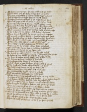 924¶ Ałł downe gronynge . he ӡode . he ӡolde out þe soule
Thenne toke þey þe body . & kaste hit in tyber
Seuene monethes þat manne . hadde septur in hande
And so lefte he þe lyfe . for his euełł dedes
928¶ Another prince þey sowӡte . þat þe septur shulde haue
Thus ałł þese grete ar gone . & neuur aӡeyn turned
Nowe of þe kynge of surry . wyłł I seye more
Howe þis komely kynge . þat for criste werredde
932¶ Hath holdyn þe hethenn men . þis oþur half wyntur
That no manne oute of þe cyte so bolde was to passe
As he to dynere on a daye . witħ dukes was sette
There kome knyӡtes fro rome . rydynge on faste
936¶ Ałł armed in clene steele . & browӡte tydynges goode
They kneled ałł to þe lorde . & letteres þey hym toke
They seyde comely kynge . þe knyӡthode of rome
witħ þe senatours assent . & ałł þe cyte aftur
940¶ Haue chosyn þe for chefeteyne . to be her emperour
As ӡe may se by þe sele . assaye howe ӡe lyketħ
The lorde lefte vp þe lefe . & þe letter by holdetħ
He loketħ euery lyne . to þe laste ende
944¶ Bordes were boren down . & þe kynge rysetħ
He kalled his counseyle a none . & chaunged his speche
Ӡe lordes of my bloode . þe whyche I moste truste
My sone is nexte to my selfe . & ooþur sybbe many
948¶ Syr sabyne of surry . a manne þat I truste
And other frendes mony . þat me feytħ owen
Ioyfułł worde is me browӡte . fro senatours of rome
To be lorde of þat londe . these lettres þus seyn
952¶ Syr sabyne of surry . to sey þe behouetħ
How myӡte I saue my selfe . if I so wroӡte
For I haue fully hyӡte . here to a byde
Tyłł þe ӡates be opened . & þe town ӡolde
956¶ And for to haue þis towred town . ryӡt at my wylle
And for to venge god of þese hethen . þat þis towne kepen
And beten & breken downne . þese torrettes hye
Tyłł þat no stoon vp on stoone . in þat place be lafte
960¶ The knyӡte kneledde a downe . & to þe kynge seyde
Here are meyne with þe . þat þy worshyppe wolde
Of longe tyme with þe lafte . þ{e}y lege menne echon
That we done is þy dede . þer may noman deme other
964¶ The dome demed was ther . who so doth by a nother
Shałł be souerayne hym selfe . in þat same dede
For also fer forth is he . at þe ferther ende
That of fletħ þe skynne . as he þat þe fote holdetħ
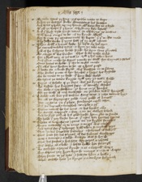 968¶ By take tytus þy sone . þis townne nowe to kepe
And to þe dowӡtye duke . domiciane his brother
And here I holde vp my hande . with hem for to a byde
with ałł þe helpe þat I haue . whyle my lyfe lastetħ
972¶ And þou shalt ryde vnto rome . to resceyue þe crowne
witħ honour emperour to be . as þy kynde asketħ
For so may þy couenaunte by kepte . þat þou to criste made
Thy selfe doeste þat þyne dotħ . yf þy wyłł assente
976¶ Then witħ a lyones looke . he lefte vp his eӡen
He turned toward tytus . & hym þe tale tolde
And as sir sabyne hadde seyde . he hym sone graunted
To abyde with his broder . what so be tythe wolde
980¶ For I shałł tary at þis townne . tyłł I hit taken haue
And þenne made he wayes þorowӡ þe wałł . for waynes & cartes
Oure hostes to holde . þat we to criste made
Or elles here hewen to be . or I hens passe
984¶ A booke on a brode shylde . was browӡte on to swere
The dukes putte to her handes . & lordes hit kyssedde
To be trewe to þe lorde . þat hem lede sholde
To tytus þe trewe knyӡte . tyłł þey þe townn hadde
988¶ Fayne as folowe of þe daye . was þe kynge þanne
He kyssede his knyӡtes soone . with comely wordes
My wele & my welfare . ӡe haue in ӡour hondes
For þe tresour of my trowӡthe . on ӡondur town hangetħ
992¶ I wolde not but þis townne were tane . & þese towres hyӡe
For ałł þe shynynge golde . vnþur godde of heuen
Nor no stone in þat place . stondynge vpon other
But ouur turned & tumbled . temple & oþur
996¶ Thenne taketħ he his leue . at his lordes alle
He wente wepynge a way . & on þe walles loked
And he prayde god of his godenesse . hem grace to sende
To holde þat þey hyӡte haue . þat neuur her hertes turne
1000¶ Nowe is vaspasiane I gone . ouur þe bygge stremes
Euen entredde in to rome . & emperour was made
And tytus for þat tydynge . hatħ taken so mykełł Ioye
That in his senewes sodenlye . a sekenes is fallen
1004¶ That prince for his feynnes . of his faderes worshyppe
with a crampe & a colde . kawӡte was so harde
That his feestes & his fete . fyngeres & Ioyntes
was lethie as a leke . & lefte hadde her strengħ
1008¶ He crokedde aӡeyns kynde . & as a crepułł waxe
But whenne þey syӡen hym so . manye a menne wepte
They sente to þe cyte . & sowӡte hem a lecħe
That cowthe hele þe kynge . & a condyte delyuered
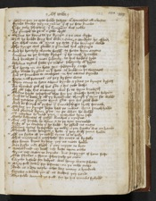 1012¶ whenne þey þe cyte hadde sowӡte . with herowdis ałł a bowte
Fynde kouthe þey no manne . þat of þe fete knewe
Safe only Iosephus . þat Surganne was noble
He graunted to go with a gode wyłł
1016¶ whenne he kome to þe kynge . & þe cace wyste
Tyłł he hadde done his dede & cure . a condyte he asked
For what man with Inne þe cyte . þat he brynge wolde
The kynge was gladde & graunted his askynge
1020¶ And he hertyly wente fortħ . to fette hym anone
A manne to þe dowӡty kynge . þat he most hatedde
And browӡte þat man sodenly . to his beddes syde
whenne tytus sawe þe manne . sodeynly with syӡte
1024¶ His herte in an hote Ire . sodeynly a rose
The bloode by ganne in þat hete . to brede in þe vaynes
And þe senewes to conforte . in his owene kynde
Feete & ałł fetures . as þey by fore were
1028¶ They come to here owene kynde . & þenne þe kynge Rysetħ
He thanked god of his grace . & his gode leche
Of ałł safe his enemye . was so to hym browӡtħ
Thenne sayde Iosephus thoo . syr þis wreche hath þe holpen
1032¶ And he is boote of ałł þy bytternes . thougħ þou hym sle wolde
And þerfore graunte hym grace . for his good dede
And be frend with þy foo . þat frendschippe hatħ serued
¶ Thanne þe kynge sawe how þe manne . hym saued hadde
1036And graunted hym grace . to go wher he wolde
Of Iosephus he made Ioye . & Iewelles hym ӡafe
Bothe besantes of golde . broches & rynges
¶ But ałł forsoke he thanne . & to þe cyte turnedde
1040Safe with þe condite þat he hadde . he asked no more
Thanne tytus besegedde þe town . & þer sorowe was on hande
Thorow harde hongur & hote . þat þey witħ Inne hadde
¶ Of þe sorwe of þe town . tyme is to telle
1044what moreyne & myschefe . for mete is by falle
For foure dayes by fore . þey no mete hadde
Nor fysħe nor flescħ . þat þey myӡte on byte
¶ Nother brede nor brotħ . nor beste vpon erthe
1048wyne nor water to drynke . but wepynge of hem selfe
Olde scheldes & shone . scharpely þe eten
Swyche lyflode for ladyes . was heuy vnto schewe
¶ They fełł down for defaute . on þe colde erthe
1052Dede as a dore nayle . echee day many a hondred
Sorowe a waked þer with . as wolfes þey ferde
The feble waryed þe fułł . for he his wombe fylledde
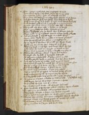¶ Oon Marye a good wyf . for myschefe of foode
1056Here owen chylde þat she bare . leyde hit on þe coles
She rostedde rybbe & syde . with rewfułł wordes
Dere sone sche {sch}seyde on eche a syde . sorowe is on honde
¶ And sore batayle witħ oute fortħ . oure bodyes to kylle
1060witħ Inne hongur is so hoote . þat nyӡe oure herte breketħ
And þerfore ӡylde to me þat I þe ӡafe . & a ӡeyne turne
Entur þer þou out come . & þanne eete sche a shuldur
¶ The smełł rose of þe roste . a bowte in þe strete
1064That many fastynge folke . þer felede þe sauour
Downe dasschedde þey þe dores . dye þat womman schulde
That mete in þat myschefe . frome menne hadde I keppte
¶ And þanne sayde þat wofułł wyfe . in a wode hongur
1068Myne owen chylde haue I roste . & þe bones gnawen
ӡette haue I saued ӡou somme . & þe syde fette
Of þe chylde þat she bare . þanne ałł her bloode turned
¶ Fortħ þey wente for woe . wepynge fułł sore
1072Alas þey seyde in þis lyfe . how longe schałł we lyfe
ӡette were hit bettur at a brayde . in batełł to dye
Thanne thus in sorowe to lyve . & lengthe our peyne
¶ Thanne demed þey a dome . þat pyte was to here
1076To voyde alle by detħ . þat vytayles distroyde
As wymmen & weke folk . þat fallen were in elde
And alle swycħ þat stode in no stede . but her store wasted
¶ And aftur to trete of trewce . witħ þe grete lordes
1080But tytus graunted hit nowtħ . for ałł here queynte gynne
For he is wyse þat is ware . ere hym woo happen
euur witħ falshede a ferre . is fayre for to melle
¶ To werke vnþur þe walles . weyes þey casten
1084whenne tytus to þe Iewes . no trwce wolde graunte
witħ masons & mynours . to myne þey by gynne
And dyggedde faste vnþur grownde . & god ӡefe vs Ioye
¶ As tytus on a tyme . a bowte þe towne rode
† Passus . vijus†
1088witħ syxty sperys of þe sege . & ӡemen a fewe
At þe sowtħ est syde . out of a caue
vp a buschement brake . ałł of bryӡte helmes
¶ Fyve hondrede of fyӡtynge menne . & fellen hym a bowte
1092In Iope & in Iambewes . ałł þe Iewes were
They hadde wroӡte a waye . & þe walles myned
Thenne tytus turnede hem to . witħ outen more tale
¶ Shaftes scheueredde were sone . & scheldes thorow thryllede
1096Manye a legge was thorow schote . with þe scharpe ende
Haberions & armour . was blody by ronne
Many a manne at þat fyӡte . fełł doun dede
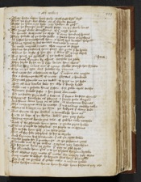¶ They hewe vpon hard stele . witħ fułł byttur wyłł
1100That þe fyer out flewe . as of flynte stones
Bothe þe helm & þe hede . þey hewen to gedur
That þe stumpe vndur steede feete . in þe steele leues
¶ The ӡonge duke domysyane . of þat noyse herde
1104He houede with oute þe chase . with .viij. hondred speres
They fellede of þe false folke . & slewe hem euerychone
As bestes he murthered hem . & hatħ hys brother holpen
¶ Thenne tytus to his tentes turnede a none
1108He made mynours & men . that myne to stoppe
Thanne he profered hem pece . for pyte þat he hedde
whanne he wyste of her woo . þat were with Inne closed
¶ But Iona þe gylefułł . þat þe Iewes ledde † IONA †
1112And anoþur Symon by assent . forsoke þe profer
They seyde byde in þat lyfe . leuer hem were
Thanne any manne out of rome . shollde reioyse her sorowe
¶ Sale in þe cyte was secedde . by þanne
1116was noӡte for a besaunte to bye . þat menne ete myӡte
For a ferdynge wortħ of mete . flor{n}ans a hondrede
Prynces proferede in þe town . to paye in þe fyste
¶ But ałł was boteles bale . for who þat brede hadde
1120wolde not a gobette haue gyfen . for golde vpon erthe
wymmen fadede faste . & her faces wannede
For þe fawte some fełł a downe . þat fayre be fore weren
¶ Swonyng swellede as swyne . & some pale waxen
1124And some were lene on to loke . as lanterne hornes
The morayne was so moche . þat no manne cowthe telle
where to burye in þe cyte . þe bodyes þat were dede
¶ But wente to þe walles . & tumblede hem ouur
1128In to þe depe of þe dyche . down gon þey falle
whenne tytus herde þis tale . of god he toke recorde
How þat he proferede hem pece . & grete pyte hadde
¶ Thenne prayde he Iosephus . þe peple to enforme
1132For to safe hem self . & þe cyte ӡelde
But ałł for soke Iosephus . so for to wyrke
And Symon his seriaunte . þat ałł þe cyte ledde
¶ Myche peple for þat prechynge . at þe posterne ӡates
1136Turnede out of þe towne . & tytus þey besechynne
To forӡeue hem þe gylte . þat þey to god dyde
He grauntede hem grace . & to þe Iaylers he hem by toke
¶ But whenne þey mette with mete . on myӡty þey were
1140Any mete to defye . so feynte was here strengtħe
For fułł þe guttes of golde . eche a manne hadde
Leste her foo menne haue hem shulde . here florens þey ete
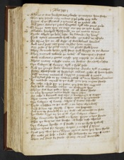¶ whanne it was browӡte out a brode . þe meyne hem slewe
1144Ther þey gorede euery manne . & þe golde þey toke
Feyne of þe florens . & þenne of þe Iewes alle
And ӡette were þe ӡates vngette . tyłł two ӡeres ende
¶ So longe sette þey þe sege . ere þey þe cyte hadde
1148Ellevenn hondred thowsande . in þe mene tyme nota
Dyede whyle þe labour leste . by swerde & by hongur
Now tytus counceyle hatħ take . þe town to assayle
¶ To wynne hit on ałł wyse . of warwolues handes
1152And neuur pyte nor pece . to profre hem more
Nor Iewe þat he gete maye . no grace shałł haue
They armede hem ryth sone . fułł bryӡte to þe werre
¶ They turned towarde þe town . with trompes & pypes
1156witħ nakeres & grete noyse . þey nyӡede þe walles
There mony a styffe mon in stowre . stondeth a lofte
Syr Sabyn of Surry . tyłł a syde ӡode
¶ And þe ӡonge duke domycyane . drewe tyłł a nother
1160Fyfty thowsande of fyӡtynge menne . eche of hem hadde
witħ many maner of engyne . & mynours I nowe
And tytus ӡede to þe towne ӡates . with ten thowsand menne
¶ He markede mynours to þe wałł . þere þey myne shulde
1164On eche a syde for þe sawte . þey sette her engynes
And bolde armedde menne . in berfrayes hyӡe
Thanne was but þole & dynne . as ałł down shulde
¶ So euery lyuynge manne . layde vpon other
1168On eche a kornełł was crye . & kacchynge of wepyn
That many manne at þat sawte . fełł to þe grownde
Syr Sabyne of Surry . whyle þat sawte lastedde
¶ Leyde a ladder to þe wałł . & on lofte clymbetħ
1172And wanne vp wyӡtly . þat hym woo happedde
And þer vp stondetħ on þe wałł . ałł armedde in stele
He slewe syxe on þe wałł . Syr Sabyne a lone
¶ The seuenthe hyttetħ on hym . {ӡ}ryӡte a sore dynte
1176That þe brayne out braste . at bothe nose thyrles
Syr Sabyne dyedde at þat stroke . & in þe dyche falletħ
Thanne tytus for sorowe wepte . & cursed þat tyme
¶ Syns þey thus haue hym sleyne . pyte it were þey lyue shulde
1180For nowe ys dede a duke . the dowӡtyeste on erþe y trowe
That euur stede by strode . or ony armour weredde
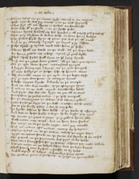¶ Thanne tytus on þe same syde . setteth to an engyne
wode nyӡe he was for wrothe . & to þe wałł dryuetħ
1184That hyt ałł ouur drewe . & Iewes an hondredde
were dede with þe stroke . & in þe dyche felle
¶ Thanne tytus holdeth vp his hondes . & ałł myӡty god þanketħ
That þey {So dere}de dukes detħ . so dere haue bowӡte
1188The Iewes prayde hym of pece . þis was þe estur euen
And to þe comely kynge . þe keyes þey kasten
¶ False traytours quod tytus . now take hem ӡour selfe
There shałł no warde on þe wałł . vs þe weye lette
1192we haue getenn vs a way . aӡens ӡour good wylle
That shałł sytte fułł sore on ӡour sory kynde
¶ And ere þe ӡates were geten . ałł þe thre ӡere tyme
Ouur þe cyte were seyne . meruelous þynges
1196A bryӡte brennynge swerde . ouur þe cyte hanged
with oute holdynge or helpe . safe of heuenn alone
¶ Also armedde men in þe ayer . on þe beste wyse
Ouur þe cyte were seene . at certeyne tymes
1200A kalfe aӡeyne kynde . kaluede in þe temple
And an ewe was euedde . at þe offerynge tyme
¶ A manne on þe wałł . cryede wontherlye lowde
And seyde . woo . woo . woo . lyӡte on ӡou ałł at ones
1204Ierusalem þe Iewes towne . & þe Ioly tempułł
In þe same tyme þe towne . was taken & ӡolden
¶ ӡette seyde þe wyӡte on þe wałł . a nother worde more
woo to þis wordy place . & woo to my selfe
1208He dyedde whenne he done hadde . with þe stroke of a slynge
And was in haste hadde a weye . howe wyste þey neuur
¶ vp wente þe ӡates a none . þey ӡolden hem alle
witħ outen any armour . but in here bare serkes
1212Fro none in to þe derke nyӡte . neuur þey cecedde
But euur manne aftur manne . mercy by sowӡten
¶ Thenne tytus in to þe townne . taketħ þe ryӡte weye
Myӡte no manne stonde in þe strete . for stynke of þe corses
1216The pepułł on þe pamente was pyte to be holde
That were famyssched for þe fawte . whenne þey mete lakkede
¶ was þer noӡte on no ladyes lafte . but þe bare bones
That fayre were by fore . & fresshe to by holde
1220And burgeys with balyes . as barellys somme tyme
No grettur þenne a grehounde . to grype in þe myddełł
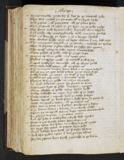¶ Tytus tariedde noӡte for þat . but to þe tempułł ӡode
That was rayled in þe roofe . with rubyes ryche
1224witħ perles & with perytotes . ałł þe place sette
That glystered as coles in þe fyre . on þe golde ryche
¶ The dores witħ dyamoundes . dryuen were thykke
And made also merveylously witħ margery perles
1228That euur lemede þe lyӡte . & as a lampe shewed
The clerkes hadde none oþur lyӡte . whenne þat þey dede ryse
¶ The romaynes wayted on þe werke . & cursedde þe Iewes
That so precyous a place shulde perysshe for synne
1232The tresour a way to take . tytus commaundedde
Grete goddes of golde . who so grype luste
¶ Bacyns of clene golde . & oþur ryche gere
Pylers massylye made . of metałł fułł fyne
1236Cuppes craftylye caruedde . ałł of clene golde
Peynted witħ perre . ałł þe place ouur
¶ The romayns renden hem down . & to rome ledden
whenne þey þe cyte hadde sowӡte . on þe same wyse
1240Telle kowthe no tonge . þe tresour þat þey hadde
Iewellis for Ioly men . & Iemewes ryche
¶ Floreyns of fyne golde . no manne wantedde
Ne ryche pelewes & pane . {p}for princes to were
1244Besauntes byes of golde . broches & rynges
Clene clothes of golde . many cartes fułł
welthe lakkedde no man . but toke of þe beste
¶ Nowe masons & mynours . han þe erthe sowӡte
1248Hewenn thorow þe harde stone . & hadde hem to grownde
Bothe tempułł & towre . ałł þe townne ouur
Ther was no stone in þat place . stondynge y lafte
¶ But downe beten & brente . to þe harde erthe
1252whenne þe tempułł was ouur kaste . tytus commaunded
In plowes to putte . & þe place eeren
And aftur sewe it witħ salte & seyde these wordes
¶ Nowe is þis worthy place . stroyed for euur
1256Thanne tytus was sette . in a cheyre fułł ryche
To Iuge the Iewes . as Iustyse hym selfe
Cryours kallede hem fortħ . þo þat cryste slowen
¶ And that pylate a pere . þat was prouoste thanne
1260Pylate proferes hym fortħ . & peredde at þe barre
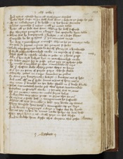And tytus askedde hym . ałł with fayre wordes
Howe that criste to þe detħ was done . & howe to þe detħe he ӡode
¶ Of þe rebukynge þat he hadde . & of his harde woundes
1264Thanne Menedde þat manne . & ałł þe mater tolde
Howe ałł þe dede was done . whenne he detħ suffrede
For thryttye penyes in a bagge . his apostelle hym solde
¶ Thus was he bargeyned & bowӡte . & as a beste sleyne
1268Cursedde be he quod tytus . þat þe countes made
He wax a marchaunt a mysse . whenne he þe moneye toke
To selle so precyous a prince . for penyes so fewe
¶ Thowӡ euery ferþynge hadde be wortħ . floreyns a hondredde
1272I wyłł now marchaundyse make . in mynde of þat other
That shałł be a fowle rebuke to ӡowe . er I hens passe
Alle þat her wyłł bodyes bye . or marchaundyse make
¶ To lower pryce for to passe . þenne þey þe prophete solde
1276He made a myddes þe oste . a markette to crye
Ałł þat chaffare wolde chepe . grete chepe to haue
Euur for on peny of pryce . paye who so wolde
¶ Thrytty Iewes in a rope . bounden to gedur
1280So were þey bargeyned & bowӡte . & browӡte out of lyfe
And neuur aftur on þat syde . kome manne of hem more
Nor none þat leuedde on her lawe . shulde in þat londe dwelle
¶ That turmented trewe god . thus tytus commaundede
1284Iosephus þe gentyłł clerke . a Iorned was to rome
Of þis mater & more . to make feyre bokes
And pylate to prysone putte . to pyne ther for euur
¶ At vyane a fowle detħ . & vengeaunce he suffredde
1288whenne ałł was demedde & don . þey drewe vp tenntes
They trussede here tresour . & trumpede vp þe sege
And wente syngynge a waye . & lafte woo by hynde
¶ Home þey ryden to rome . nowe helpe vs our lorde
1292IesuIoye hem & vs . witħ Ioye in his blysse
And to welthe hem wysse . that wryten this geste .
Amen †
† Explicit †